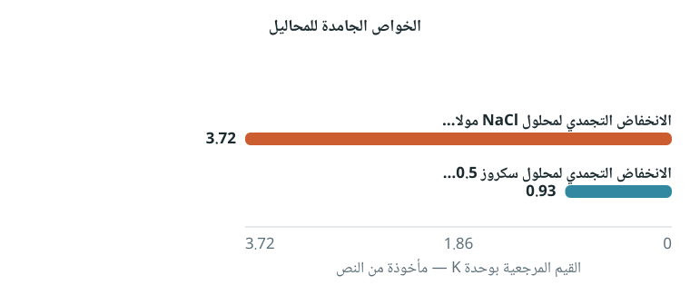

الخواص الجامدة للمحاليل
Colligative properties
الخواص الجامدة هي خواص المحلول التي تعتمد على عدد الجزيئات المذابة لا على نوعها، وتشمل انخفاض ضغط البخار والارتفاع الغلياني والانخفاض التجمدي والضغط الإسموزي. تُستعمل في تقدير الكتل المولية وفي مقاومة تجمد الطرق وفي فهم نقل الماء في الخلايا.
حين يُذاب جسم غير متطاير في مذيب، تنخفض طاقة كيميائية المذيب عند السطح فيقلّ ضغط بخاره، وتنشأ عنه أربع خواص مترابطة: انخفاض ضغط البخار، وارتفاع نقطة الغليان، وانخفاض نقطة التجمد، والضغط الإسموزي. وكلها تتناسب مع التركيز المولالي الكلي للجزيئات المذابة مضروباً في معامل فانت هوف i. مثال: إذابة 1.00 mol من كلوريد الصوديوم في 1.00 kg ماء تعطي i = 2 نظرياً، فالانخفاض التجمدي ΔT_f = 1.86 × 2 × 1.00 = 3.72 K، أي أن المحلول يتجمد عند −3.72 °C بدل 0 °C.
كيف تعمل الظاهرة؟
الجزيئات المذابة تشغل جزءاً من سطح المحلول وتحجب جزيئات المذيب عن التبخر، فيقلّ ضغط البخار. ولأن الغليان يحدث حين يتساوى ضغط البخار مع الضغط الجوي، يحتاج المحلول حرارة أعلى ليبلغ ذلك، فيرتفع الغليان. وبالمثل، يحتاج التجمد إلى ترتيب جزيئات المذيب في شبكة بلورية، والجزيئات المذابة تعيق هذا الترتيب فتحتاج حرارة أقل، فينخفض التجمد. أما الضغط الإسموزي فينشأ من ميل المذيب إلى الانتقال عبر غشاء شبه منفذ نحو الجانب الأكثر تركيزاً لتسوية الطاقة الكيميائية.
العلاقة بالأرقام
ΔT_f = K_f·i·b، وΔT_b = K_b·i·b، وπ = i·b·R·T. وللماء: K_f = 1.86 K·kg/mol وK_b = 0.512 K·kg/mol. مثال: محلول NaCl بتركيز 0.500 mol/kg وi = 2 يعطي ΔT_f = 1.86 × 2 × 0.500 = 1.86 K. والضغط الإسموزي عند 298.15 K: π = 2 × 0.500 × 8.314 462 618 × 298.15 = 2 478.7 kPa ≈ 24.5 atm، وهو ضغط كبير يفسّر قوة امتصاص الماء في جذور النباتات.
مفاهيم متقاربة
يُفرَّق بين الخواص الجامدة والضغط الإسموزي في أن الأخير خاصية منفصلة تُقاس بغشاء، لكنه يتبع القانون نفسه. ويُفرَّق بين i النظري وi المقيس: NaCl نظرياً 2، لكن القياس يعطي نحو 1.9 عند 0.1 mol/kg و1.8 عند 1 mol/kg بسبب التجمع الأيوني. ويُفرَّق بين الانخفاض التجمدي والتبريد الفائق: الأول توازن حراري، والثاني حالة غير مستقرة لا علاقة لها بالتركيز. وأخيراً يُفرَّق بين الخواص الجامدة والتغيرات الحرارية للذوبان: الأولى تعتمد على العدد، والثانية على طاقة الترابط بين المذاب والمذيب.
حدود التطبيق
الصيغ المدرسية تفترض محلولاً مثالياً مخففاً، فتنحرف عند التراكيز العالية حيث تتداخل الجزيئات ويصبح معامل النشاط بعيداً عن الواحد. ولا تصف محاليل البوليمرات أو الجزيئات الكبيرة، حيث يعتمد الأثر على الشكل والحجم لا على العدد فقط. ولا تُستعمل للمذابات المتطايرة، لأنها تتبخر مع المذيب وتفسد افتراض عدم التطاير. كذلك لا تُستعمل في المحاليل التي تتجمع فيها الجزيئات (مثلات) لأن العدد الفعلي يقلّ عن المحسوب.

| الكمية | القيمة | المصدر |
|---|---|---|
| الانخفاض التجمدي لمحلول NaCl مولالي 1.00 | 3.72 K | [1] |
| ثابت الغاز المولي R | 8.314 462 618 J·mol⁻¹·K⁻¹ | [2] |
| الانخفاض التجمدي لمحلول سكروز 0.500 مولالي | 0.930 K | [1] |
المصادر
- 1 The International System of Units (SI), 9th edition (2019) — BIPM — Bureau International des Poids et Mesures (2019). www.bipm.org/en/publications/si-brochure · اطُّلع عليه 2026-11-21
- 2 CODATA Value: molar gas constant — NIST — CODATA 2022 recommended values (2024). physics.nist.gov/cgi-bin/cuu/Value?r · اطُّلع عليه 2026-11-21
- 3 The International System of Units (SI), 9th edition (2019) — BIPM — Bureau International des Poids et Mesures (2019). www.bipm.org/en/publications/si-brochure · اطُّلع عليه 2026-11-21
استشهد بهذا المصطلح
الصيغتان مبنيتان من بيانات الصفحة نفسها: العنوان والتاريخ ورابط النسخة المنشورة.
الخواص الجامدة للمحاليل — Colligative properties. (2026). ديوان المعرفة — انفراد. https://infiradev.com/diwan/terms/term-colligative-properties.html
@misc{term-colligative-properties2026,
title = {الخواص الجامدة للمحاليل},
titleaddon = {Colligative properties},
howpublished = {{ديوان المعرفة — انفراد} — مرجع علمي عربي},
year = {2026},
url = {https://infiradev.com/diwan/terms/term-colligative-properties.html},
urldate = {2026-11-26},
note = {مراجعة علمية: hermes (مراجعة معتمدة 2026-11-26)}
}
راجعه: hermes (مراجعة معتمدة 2026-11-26) · 2026-11-26 · آخر تحديث 2026-11-21